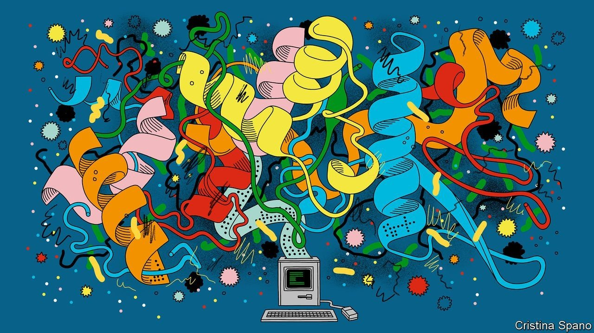
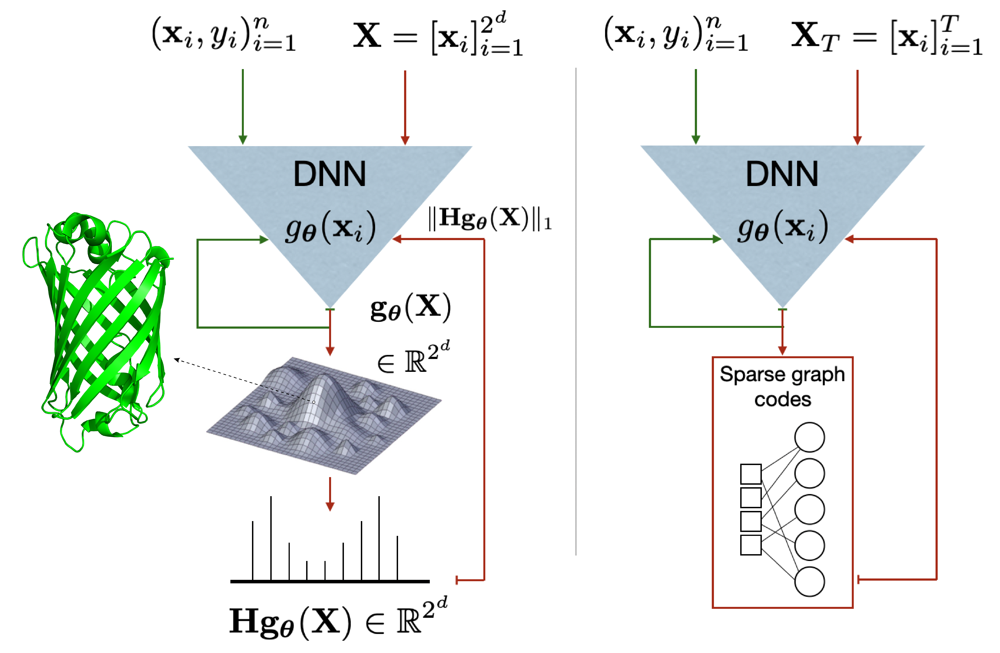
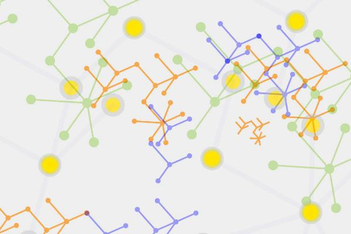

Amirali Aghazadeh
Incoming Assistant Professor at Georgia Tech
recent publications

In a collaboration with a fantastic team of computer scientists and computational biologists, we worked on a review paper where we cover the past achievements, current advancements, future potentials, and important limitations of deep learning in key areas of biosciences including: Structural and Functional Biology, Bioengineering and Biosecurity, Evolutionary Biology, and Systems Biology.
N. Sapoval*, A. Aghazadeh*, M. Nute, D. Antunes, A. Balaji, R. Baraniuk, CJ Barberan, R. Dannenfelser, C. Dun, M. Edrisi, L. Elworth, B. Kille, A. Kyrillidis, L. Nakhleh, C. Wolfe, Z. Yan, V. Yao, and T. Treangen, Current progress and open challenges for applying deep learning across the biosciences, Nature Communications April 2022.
We address a foundational question in biological experiment design: How many experimental measurements do we need to learn a fitness function? We use ideas from random field models in biophysics and compressed sensing in signal processing to address this question. We show that GNK fitness functions with parameters set according to protein structural contacts can be used to approximate the number of samples required to estimate several protein fitness functions.
D. Brookes, A. Aghazadeh, and J. Listgarten, On the sparsity of fitness functions and implications for learning, Proceedings of the National Academy of Sciences (PNAS) Jan. 2022.Code on Github

Epistatic Net (EN) is a combinatorial algorithm to regularize deep neural networks (DNNs) to promote sparsity in their (Walsh-Hadamard) spectral transform (i.e., space of all-order interactions). EN significantly improves the accuracy of DNNs in predicting biological function from sequences (e.g., proteins) especially in low-sample regimes. EN subsamples the combinatorial sequence space to induce a sparse-graph-code structure and finds the spectral transform of DNNs using a peeling algorithm in every iteration of a novel ADMM-based regularization scheme.
A. Aghazadeh, H. Nisonoff, O. Ocal, Y. Huang, D. Brookes, O. Koyluoglu, J. Listgarten, and K. Ramchandran, Epistatic Net allows the sparse spectral regularization of deep neural networks for inferring fitness functions, Nature Communications Sep. 2021.Code on Github

BEAR is a second-order optimization algorithm for ultra-high dimensional feature selection with a memory space that grows sub-linearly with the problem dimension. BEAR limits the rate of collisions of the stochastic gradients in Count Sketch and drastically improves the memory-accuracy tradeoff in feature selection.
A. Aghazadeh, V. Gupta, A. Dewasee, O. Koyluoglu, and K. Ramchandran, BEAR: Sketching BFGS Algorithm for Ultra-High Dimensional Feature Selection in Sublinear Memory, Proceedings of Machine Learning Research (PMLR), Presented at Mathematical and Scientific Machine Learning (MSML), Aug. 2021.Code on Github
My talk at MSML
My slides at MSML

We model unwanted biological perturbations as adversarial attacks that (once viewed across data points) live in a low-dimensional subspace (low rank or group space). The key intuition is that in real-world settings perturbations (e.g., batch effects) are not independent across data points and share some structures that can be exploited while training. We then formulate a group-structured optimal transport cost and develop an optimization algorithm to train deep neural networks that are robust against such attacks. We showcase the effectiveness of our robust training scheme in various computational biology applications.
F. Farnia, A. Aghazadeh, J. Zou, and D. Tse, Group-Structured Adversarial Training, arXiv:2106.10324 June 2021.in the pipeline
We theoretically analyze the implications of sparse spectral regularization for data-efficient learning in deep neural networks. We identify the conditions under which the spectral regularizer result in an improved generalzition performance by analyzing the stationary points of the regularized loss function.
A. Aghazadeh, N. Rajaraman, T. Tu, and K. Ramchandran, Spectral Regularization Allows Data-frugal Learning over Combinatorial Spaces, Under submission.earlier publications

CRISPRLand is a spectral platform to explain and analyze the machine learning models trained on the samples from the fitness landscape of DNA repair after CAS9-induced breaks in the Walsh-Hadamard (Fourier) domain. CRISPRLand explains the black-box models in terms of the (higher-order) interactions among the nucleotides in the DNA sequence around the cut site. CRISPRLand infers the entire DNA repair landscape with an exponential speedup compared to conventional methods.
A. Aghazadeh, O. Ocal, and K. Ramchandran, CRISPRLand: Interpretable Large-Scale Inference of DNA Repair Landscape Based on a Spectral Approach, Bioinformatics, Presented at Intelligent Systems for Molecular Biology (ISMB), July 2020.Code on Github
My talk at ISMB

SPROUT is a machine learning algorithm based on boosted gradient trees to predict the DNA repair outcome after CAS9-induced double-strand breaks in T Cells. Our analysis of DNA repair outcome using SPROUT reveals long insertions (>20 nucleotides) from spatially close locations on the genome.
R. Leenay*, A. Aghazadeh*, J. Hiatt*, D. Tse, T. L. Roth, R. Apathy, E. Shifrut, J. F. Hulquist, N. Krogen, Z. Wu, G. Cirolia, H. Canaj, M. Leonetti, A. Marson, A. May, and J. Zou, Large dataset enables prediction of repair after CRISPR–Cas9 editing in primary T cells, Nature Biotechnology, July 2019.SPROUT interactive software
Code on Github
Data on figshare
News Coverage
Stanford University

MISSION is a first-order optimization algorithm for sublinear-memory feature selection in massively high-dimensional datasets. The key idea behind the algorithm is to store and iteratively update the model parameters in an efficient data structure from streaming called Count Sketch.
A. Aghazadeh*, R. Spring*, D. LeJeune, G. Dasarathy, A. Shrivastava and R. G. Baraniuk, MISSION: Ultra Large-Scale Feature Selection using Count Sketches, International Conference on Machine Learning (ICML), July 2018.Code on Github

Insense is an optimization algorithm to select optimal linear measurements to recover a (near-)sparse signal. We have shown the utility of Insense in designing DNA probes for the UMD platform.
A. Aghazadeh, M. Golbabaee, A. S. Lan, and R. G. Baraniuk, Insense: Incoherent sensor selection for sparse signals, Signal Processing 150, 57-65 (2018).A. Aghazadeh, M. Golbabaee, A. S. Lan, and R. G. Baraniuk, Insense: Incoherent sensor selection for sparse signals, International Conference on Acoustics, Speech, and Signal Processing (ICASSP), April 2018.
Code on Github
News Coverage
Nuit-Blanche Blog Post

RHash is a fast algorithm to learn robust data-dependent hash functions. It minimizes the worst-case L-infinity norm distortion instead of the more conventional average distortion to learn hash functions.
A. Aghazadeh, A. S. Lan, A. Shrivastava and R. G. Baraniuk, RHash: Robust Hashing via L∞-norm Distortion, International Joint Conference on Artificial Intelligence (IJCAI), Aug. 2017.
Universal Microbial Diagnostics (UMD) is a new sensing paradigm that we have developed at Rice University to detect microbial agents (e.g., superbugs and viruses) using a small number of target-agnostic randomized DNA probes. The inference algorithm solves a compressive sensing problem to identify the composition of the microbial samples.
A. Aghazadeh*, A. Y. Lin*, M. A. Sheikh*, R. A. Drezek, R. G. Baraniuk, et al., Universal microbial diagnostics using random DNA probes, Science Advances 2, e1600025 (2016).US Patent
Hershel M. Rich Invention Award
News Coverage
Houston Chronicle
GenomeWeb
The Pharmaceutical Journal
BioCentury Innovations
Labroots

In a collaboration with folks at the Civil Engineering department at Rice University, we developed data-driven tools using sparse signal recovery for the Structural Health Monitoring (SHM) problem.
D. Sen, A. Aghazadeh, A. Mousavi, S. Nagarajaiah, and R. G. Baraniuk, Sparsity-based data-driven approaches for damage detection in plates, Mechanical System and Signal Processing (MSSP) 117, 333-346 (2019).D. Sen, A. Aghazadeh, A. Mousavi, S. Nagarajaiah, R. G. Baraniuk, and A. Dabak, Data-driven approaches to structural health monitoring of steel pipes, Mechanical System and Signal Processing (MSSP) 131, 524-537 (2019).